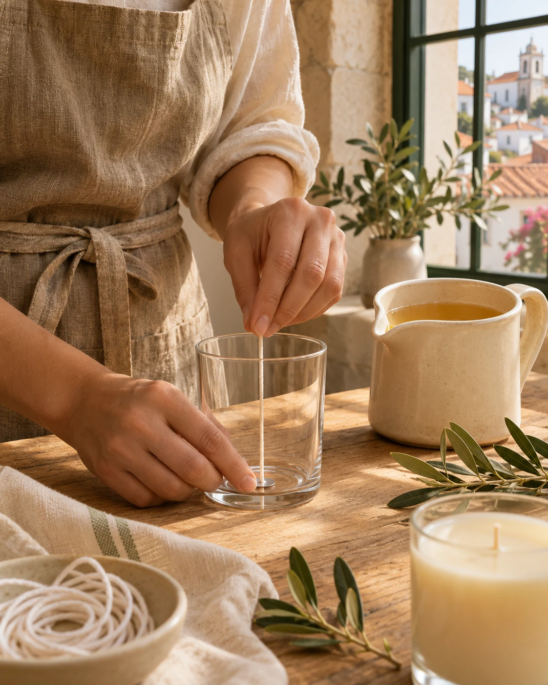

Feito com tempo. Sentido com calma.
Pequenos rituais.
Novos sentidos.
Velas que guardam lugares, despertam memórias e tornam o quotidiano um pouco mais nosso.
Descobrir a coleçãoUma nova luz em Portugal.O primeiro capítulo
AVOYA / 01
 O início de algo especial.
O início de algo especial.A primeira coleção
Encontra o teu ritual.
Quatro formas de viajar
sem sair do teu lugar.
Coleção de apresentação. Imagens, aromas, pesos e preços ilustrativos.

O gesto antes da luz.A artesã · Simone Martins
De tantos lugares,
um caminho
feito à mão.
Do Brasil trouxe as raízes. Das viagens pela Europa e por África, um olhar atento às cores, aos aromas e às pequenas coisas que ficam.
Em Portugal, encontrou espaço para escutar uma nova vontade: criar com as mãos. A Avoya nasceu desse encontro entre descoberta, coragem e cuidado.
Conhecer a SimoneA beleza de estar aqui
Acender uma vela.
Dar tempo ao momento.
Um livro aberto. Uma conversa que se prolonga. A casa em silêncio. Acreditamos nos objetos que acompanham a vida com delicadeza.
É nesse espaço simples, entre o que sentimos e o que escolhemos cuidar, que a Avoya quer estar.
O primeiro capítulo está a nascer